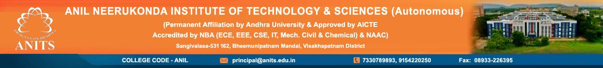

Welcome To ANITS!! ♦Ranked 251-300 band at National level in NIRF 2022 ranking by MHRD. ♦ANITS is Recognised as Host Institute (HI) to act as Business Incubator (BI) under MSME Incubation Scheme. ♦Seven-Day Workshop on "Foundations of Cybersecurity" ♦One-Week Faculty Development Program on "Foundations and Applications of AI in Healthcare" ♦A Two Week Hybrid (ONLINE & OFFLINE) Faculty Development Programme (FDP) ♦Roles and Responsibilities for faculty ♦Transport Details♦B.Tech in HONORS/MINORS ♦Student and Faculty Feedback to AICTE ♦e-Learn/ Video Lectures